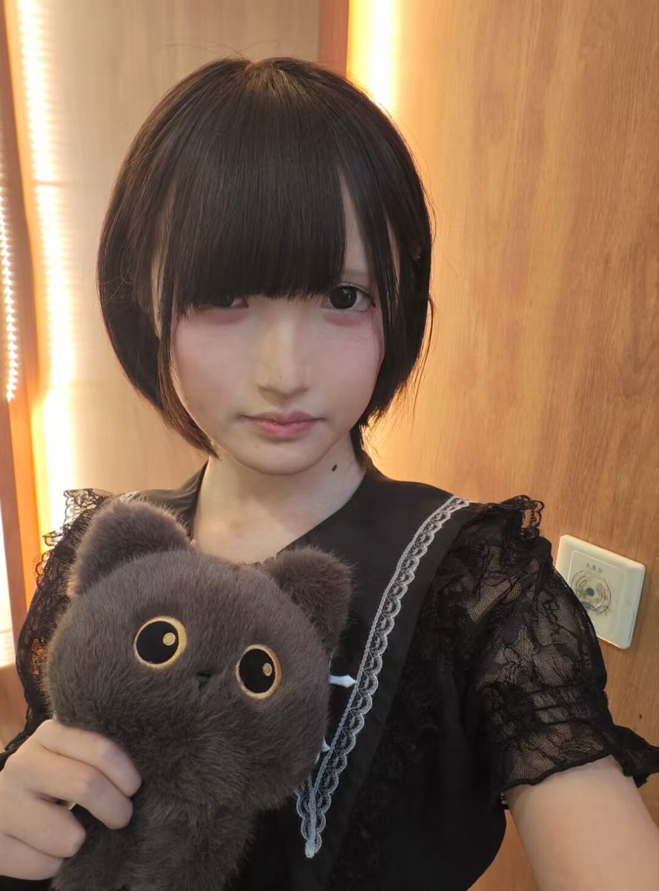
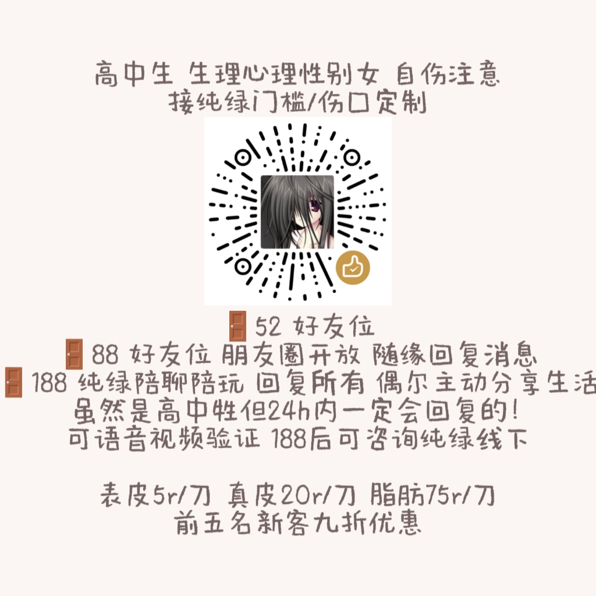

狂乱鸣唱mania
@themaniachan
RT @Kamo67398586: 我是時雨~之前的置顶放的图不好看重新发
高中牲 目前接纯绿/伤口定制 可验证 详情请看p2
不会的pc游戏/ns游戏都可以学 如果是我没有的付费游戏需要您报销/提供游戏账号
欢迎互转互fo
（伤口定制是给对方制作特效妆容 没有违反规则） 不接…


Kamo
@Kamo67398586
我是時雨~之前的置顶放的图不好看重新发
高中牲 目前接纯绿/伤口定制 可验证 详情请看p2
不会的pc游戏/ns游戏都可以学 如果是我没有的付费游戏需要您报销/提供游戏账号
欢迎互转互fo
（伤口定制是给对方制作特效妆容 没有违反规则） 不接半绿非绿 不涉及未成年色情服务 不是调教向 #门槛 #门槛妹 #纯绿 https://t.co/k8O7NTBqHJ